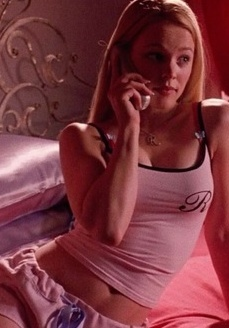
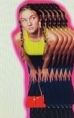
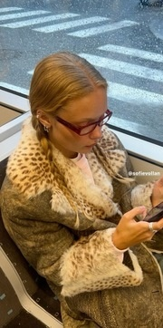
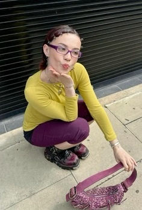

SHOOTING
39PHOTOS
17VIDEOS
4MODELS
1STORE
| STEP | MAKEUP & HAIR | PHOTO | VIDEO | NOTE |
|---|---|---|---|---|
| 1 | → STEVIE | PAUSE | PAUSE | Start: the first girl in makeup |
| 2 | → LOLA | STEVIE | PAUSE | |
| 3 | → RAFA | LOLA | STEVIE | |
| 4 | TOUCH-UPS | RAFA | LOLA | |
| 5 | TOUCH-UPS | PAUSE | RAFA | |
| 6 | — | STEVIE + LOLA + RAFA | PAUSE | Group |
| 7 | — | PAUSE | STEVIE + LOLA + RAFA | Group |
| 8 | → JADE | PAUSE | PAUSE | |
| 9 | → RUBY | JADE | PAUSE | |
| 10 | → NAÏMA | RUBY | JADE | |
| 11 | TOUCH-UPS | NAÏMA | RUBY | |
| 12 | — | JADE + RUBY | NAÏMA | Group at photo, NAÏMA on video |
| 13 | — | PAUSE | JADE + RUBY | Group |
| RUBY and JADE go home | ||||
| Lunch · IRIS arrives | ||||
| 14 | → IRIS | PAUSE | PAUSE | |
| 15 | — | IRIS + NAÏMA | PAUSE | Group |
| 16 | — | PAUSE | IRIS + NAÏMA | Group |
| NAÏMA goes home | ||||
| 17 | — | IRIS | PAUSE | |
| 18 | — | PAUSE | IRIS | |
| IRIS goes home | ||||
| 19 | — | STILL LIFES · all seven headbands (product, no model) | PAUSE | Still lifes, all seven together, no model |
| Wrap | ||||
CODES ST STEVIE · LO LOLA · RA RAFA · JA JADE · RU RUBY · NA NAÏMA · IR IRIS — 1–4 PHOTOS · 5–6 VIDEOS · 7 STILL LIFE · FRAMING CU CLOSE-UP · MCU MEDIUM CLOSE-UP · FL FULL LENGTH · MS MEDIUM SHOT

“Meet Stevie, Lola and Rafa. We think you’ll get along.”
“STEVIE. Pink was always the plan.”

“STEVIE. Pink was always the plan.”

“The finishing touch is already sorted.”

“Meet Stevie, Lola and Rafa. We think you’ll get along.”

“LOLA. The outfit was planned. The rest wasn’t.”
“LOLA. The outfit was planned. The rest wasn’t.”

“The finishing touch is already sorted.”
“STEVIE. Pink was always the plan.”
“Stevie has an update.”

“Meet Stevie, Lola and Rafa. We think you’ll get along.”

“RAFA. Probably outside. You coming? / Try me.”

“RAFA. Probably outside. You coming? / Try me.”

“The finishing touch is already sorted.”
“LOLA. The outfit was planned. The rest wasn’t.”
“She only went out for coffee.”
“She said it was a warm-up.”
“She said it was a warm-up.”

“Meet Stevie, Lola and Rafa. We think you’ll get along.”
“Everyone look here.”

“Make room for three.”

“JADE. Already making you a playlist.”
“JADE. Already making you a playlist.”

“JADE. Already making you a playlist.”
“The headband stayed. The jacket didn’t.”

“RUBY. A good person to have in your corner.”
“RUBY. A good person to have in your corner.”

“RUBY. A good person to have in your corner.”
“The headband stayed. The jacket didn’t.”
“It started with one song.”
“It started with one song.”
“NAÏMA. Particular about prints. And most other things.”
“NAÏMA. Particular about prints. And most other things.”
“NAÏMA. Particular about prints. And most other things.”
“The plans changed. This stayed.”
“Start at the top.”
“Consider this your invitation.”
“Put it on before taking anything else off.”
“Put it on before taking anything else off.”

“Start at the top.”

“We gave them names. It got personal.”
“Put it on before taking anything else off.”

“IRIS. The bookmark is a receipt.”

“IRIS. The bookmark is a receipt.”
“IRIS. The bookmark is a receipt.”

“The plans changed. This stayed.”
“Put it on before taking anything else off.”
“Put it on before taking anything else off.”
“STEVIE. Pink was always the plan.”
“LOLA. The outfit was planned. The rest wasn’t.”
“RAFA. Probably outside. You coming? / Try me.”
“JADE. Already making you a playlist.”
“RUBY. A good person to have in your corner.”
“NAÏMA. Particular about prints. And most other things.”
“IRIS. The bookmark is a receipt.”